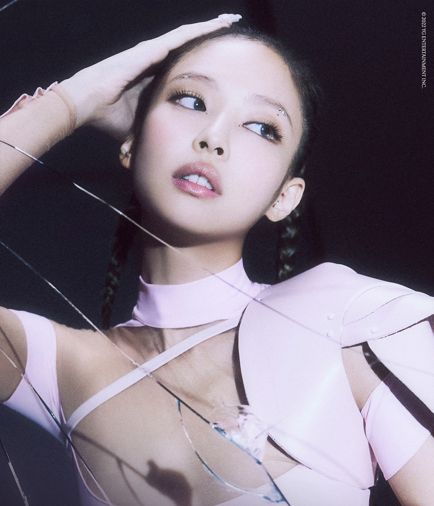

Blackpink's second full-length album [BORN PINK] was released in August with its
pre-released single
"pink venom." Blackpink, which declared the queen's naturalization ability by pouring out the
best,first and shortest records at the same time as the new song was released, will once again
capture listeners around the world through the title track "Shut Down." It is time for the new
history of Blackpink to be written through a series of world tours following the release of its
regular
album.
Album
2022. 09. 16. 2nd Album [BORN PINK]
2022. 08. 19. Pre-Release Single 'Pink Venom'
2020. 10. 02. 1st Album [THE ALBUM]
2020. 08. 28. [Ice Cream (with Selena Gomez)]
2020. 06. 26. Pre-Release Single [How You Like That]
2019. 04. 05. 2nd Mini Album [KILL THIS LOVE]
2018. 06. 15. 1st Mini Album [SQUARE UP]
2017. 06. 22. 1st Digital Single [마지막처럼]
2016. 11. 01. 2nd Single Album [SQUARE TWO]
2016. 08. 08. Debut Single Album [SQUARE ONE]
collaboration
2020. 05. 29. Lady Gaga [Chromatica] ‘Sour Candy’
2018. 09. 04. Dua Lipa [Dua Lipa (Complete Edition)] ‘Kiss And Make Up’
concert
2022.10-2023.06. BLACKPINK WORLD TOUR [BORN PINK]
2021. BLACKPINK LIVESTREAM CONCERT [THE SHOW]
2019-2020. BLACKPINK WORLD TOUR [IN YOUR AREA] JAPAN DOME TOUR
2018-2019. BLACKPINK WORLD TOUR [IN YOUR AREA]
2018. BLACKPINK ARENA TOUR
2017. Japan Budokan Debut Showcase
TV show
2020. 07. 04. [24/365 with BLACKPINK]
2018. 01. 06. [블핑하우스]
Awards
2022. 08. MTV 비디오 뮤직 어워즈 [Best Metaverse Performance]
2021. 08. MTV 밀레니얼 어워즈 Brazil [Global Hit]
2021. 01. 제 35회 골든디스크 어워즈 [음반 본상, 디지털 음원 본상]
2021. 01. 제 10회 가온차트 뮤직 어워즈 [뮤빗 글로벌 초이스상, 올해의 소셜 핫스타상, 올해의 가수상 - 디지털 음원 부문 6월/10월]
2020. 12. 2020 멜론뮤직어워드 [Top 10, 여자 댄스부문상]
2020. 12. 2020 MAMA [2020 비저너리, 베스트 댄스 퍼포먼스 여자 그룹, 베스트 여성 그룹, 월드와이드 팬 초이스 Top 10]
2020. 09. iHeartRadio Music Awards [Favourite Music Video Choreography]
2020. 09. MTV 밀레니얼 어워즈 Brazil [Best International Feature]
2020. 08. MTV 비디오 뮤직 어워즈 [Song of Summer]
2020. 03. 스포티파이 어워즈 [Most Listened K-pop Artist (Female)]
2019. 12. 2019 MAMA [월드와이드 팬 초이스상]
2019. 11. E! 피플스 초이스 어워즈 [The Group of 2019, The Concert Tour of 2019, The Music Video of
2019]
2019. 01. 제 9회 가온차트 뮤직 어워즈 [올해의 가수상 - 디지털 음원 부문 6월]
2019. 01. 제 33회 골든디스크 어워즈 [디지털 음원 본상, 코스모폴리탄 아티스트상]
2018. 12. 2018 MAMA [월드 와이드 팬 초이스 Top 10]
2018. 12. 2018 멜론뮤직어워드 [Top 10, 여자 댄스부문상]
2018. 10. MTV 비디오 뮤직 어워즈 Japan [Best Dance Video]
2018. 02. 제 7회 가온차트 뮤직 어워즈 [올해의 월드루키상]
2018. 01. 제 27회 서울가요대상 [본상]
2018. 01. 제 32회 골든디스크 시상식 [디지털음원 본상]
2017. 10. 부산원아시아페스티벌 [스타일 아이콘상]
2017. 02. 제 6회 가온차트 뮤직 어워즈 [신인상, 올해의 가수상 - 디지털 음원 부문 8월/11월]
2017. 01. 제 26회 서울가요대상 [신인상]
2017. 01. 제 31회 골든디스크 시상식 [음원 신인상]
2016. 12. 2016 MAMA [베스트 뮤직비디오 상, 베스트 오브 넥스트 女]
2016. 11. 2016 멜론 뮤직 어워드 [신인상]
2016. 11. 제 1회 Asia Artist Awards [신인상]
Kim Ji-soo (Korean: 김지수; born January 3, 1995), known mononymously as Jisoo, is a South
Korean singer and actress. She is a member of the South Korean girl group Blackpink, formed by YG
Entertainment, in August 2016. Outside of her music career, she made her acting debut with a cameo
role in the 2015 series The Producers and played her first leading role in the JTBC series Snowdrop
(2021–22).
Jisoo made her solo music debut with the single album Me in March 2023. The album debuted at number
one on the Circle Album Chart with 1.03 million copies sold in less than two days, becoming the
best-selling album of all time by a female soloist in South Korea and the first to sell over a million
copies. Its lead single "Flower" was a commercial success, peaking at number two on the Billboard
Global 200 and the Circle Digital Chart and becoming the highest-charting song by a Korean female
soloist on the Canadian Hot 100 and the UK Singles Chart.
Jisoo has been awarded several accolades throughout her career, including two Golden Disc Awards,
three MAMA Awards, a Circle Chart Music Award, and the Seoul International Drama Award for Outstanding
Korean Actress. She is the most-followed Korean actress on Instagram, and has been recognized for her
impact on fashion as a global ambassador for Dior.
Albums
2023 Single albums [me]
Filmography
Film
2023 Dr. Cheon and Lost Talisman
2023 TBA Omniscient Readers Viewpoint
Television series
2021–2022 Snowdrop
2019 Arthdal Chronicles
2017 Part-Time Idols
2015 The Producers
Awards and nominations
2024 Golden Disc Awards [Best Digital Song (Bonsang)]
2024 Golden Disc Awards [Most Popular Artist (Female)]
2024 Golden Disc Awards [Song of the Year (Daesang)]
2024 Hanteo Music Awards [Artist of the Year]
2024 Hanteo Music Awards [Global Artist Award]
2024 Circle Chart Music Awards [Artist of the Year – Global Streaming]
2024 Circle Chart Music Awards [Artist of the Year – Digital]
2024 Circle Chart Music Awards [Artist of the Year – Streaming Unique Listeners]
2024 Circle Chart Music Awards [Mubeat Global Choice Award – Female]
2023 Asia Artist Awards [Popularity Award – Singer (Female)]
2023 Asian Pop Music Awards [Best Female Artist (Overseas)]
2023 Asian Pop Music Awards [Song of the Year (Overseas)]
2023 Asian Pop Music Awards [Top 20 Songs of the Year (Overseas)]
2023 Asian Pop Music Awards [People's Choice Award (Overseas)]
2023 Asian Pop Music Awards [Best Dance Performance (Overseas)]
2023 Asian Pop Music Awards [Best Music Video (Overseas)]
2023 Brand of the Year Awards [Female Solo Singer of the Year]
2022 Blue Dragon Series Awards [Best Actress]
2022 Blue Dragon Series Awards [Best Supporting Actress]
2022 Blue Dragon Series Awards [Rookie of the Year]
2021 Weibo Starlight Awards [Starlight Hall of Fame (Korea)]
Jennie Kim (Korean: 김제니; born January 16, 1996), known mononymously as Jennie, is a South
Korean singer, rapper, and actress. Born and raised in South Korea, Jennie studied in New Zealand for
five years before returning to South Korea in 2010. She debuted as a member of the South Korean girl
group Blackpink, formed by YG Entertainment, in August 2016. In 2023, she made her acting debut under
the stage name Jennie Ruby Jane in the HBO television series The Idol.
In November 2018, Jennie made her debut as a solo artist with the single "Solo", which topped South
Korea's Gaon Digital Chart and the US Billboard World Digital Songs chart. Her 2023 single "You & Me"
reached number one on the Billboard Global Excl. U.S. and the top five in South Korea, and was the
first song by a Korean female soloist to top the UK Singles Downloads Chart. In November 2023, Jennie
established her own label named Odd Atelier.
Jennie has received several accolades throughout her career, including a Gaon Chart Music Award and a
Golden Disc Award. She is the most-followed Korean individual on Instagram, and her YouTube channel
was the fastest in history to surpass one million subscribers. Jennie is renowned for her musical
versatility and fashion image, and has been dubbed the "Human Chanel", for which she serves as a
global ambassador.
Albums
2018 Single albums [Solo]
Filmography
Television series
2023 The Idol
2018 Village Survival, the Eight
Web shows
2018 Jennie: Solo Diary
Music video appearances
2022 "Shinigami Eyes"[Grimes]
2012 "That XX" [G-Dragon]
Awards and nominations
2024 Circle Chart Music Awards [Mubeat Global Choice Award – Female]
2023 sia Artist Awards [Popularity Award – Singer (Female)]
2022 Brand of the Year Awards [Advertising Model of the Year – Female]
2021 The Fact Music Awards [Fan N Star Choice Artist]
2021 The Fact Music Awards [Fan N Star Choice Individual]
2021 Weibo Starlight Awards [Starlight Hall of Fame (Korea)]
2019 Circle Chart Music Awards [Artist of the Year – Digital Music (November)]
2019 Genie Music Awards [The Female Solo]
2019 Golden Disc Awards [Best Digital Song (Bonsang)]
2019 Golden Disc Awards [Song of the Year (Daesang)]
2019 Mnet Asian Music Awards [Artist of the Year]
2019 Mnet Asian Music Awards [Best Dance Performance Solo]
2019 Mnet Asian Music Awards [Best Female Artist]
2019 Mnet Asian Music Awards [Song of the Year]
2018 SBS Entertainment Awards [Rookie Award (Female)]
2018 SBS Entertainment Awards [Scene Stealer Award]
2018 Philippine K-pop Awards [Best Female Solo Artist]

Roseanne Park MBE (born 11 February 1997), known mononymously as Rosé (Korean: 로제), is a Korean-New
Zealand singer and dancer based in South Korea. Born in New Zealand and raised in Australia, Rosé
signed with South Korean label YG Entertainment following a successful audition in 2012 and trained
for four years before debuting as a member of the South Korean girl group Blackpink in August 2016.
In March 2021, Rosé made her solo debut with the single album R. The album sold 448,089 copies in its
first week, the highest figure by a Korean female soloist. Its lead single "On the Ground" peaked in
the top five of South Korea's Gaon Digital Chart and became the highest-charting song by a Korean
female soloist on the US Billboard Hot 100, the Canadian Hot 100, and the UK Singles Chart. It was the
first song by a Korean solo artist to top the Billboard Global 200, and broke the record for the
most-viewed music video in the first 24 hours on YouTube by a Korean solo artist. The album's second
single "Gone" peaked in the top ten in South Korea as well.
Rosé has obtained several accolades throughout her career, including two Guinness World Records, a
Hanteo Music Award, and a Mnet Asian Music Award. She is the third-most followed Korean individual on
Instagram and appeared on Rolling Stone's list of living icons from Australia and New Zealand. Rosé
has been acknowledged for her role in fashion as a global ambassador for Yves Saint Laurent, and
became the first female Korean idol to attend the Met Gala in 2021.
Albums
2023 Single albums [R]
Filmography
Television shows
2017 Fantastic Duo 2
2017 King of Mask Singer
Awards and nominations
2023 Asia Artist Awards [Popularity Award – Singer (Female)]
2022 RTHK International Pop Poll Awards [Top Ten International Gold Songs]
2022 RTHK International Pop Poll Awards [Top Female Singers]
2022 Seoul Music Awards [Main Award (Bonsang)]
2022 Seoul Music Awards [Korean Wave Award]
2022 Seoul Music Awards [Popularity Award]
2022 Joox Thailand Music Awards [Korean Song of the Year]
2022 Korea First Brand Awards [Best Female Solo Singer]
2022 Gaon Chart Music Awards [Artist of the Year – Digital Music (March)]
2022 Gaon Chart Music Awards [Artist of the Year – Physical Album (2nd Quarter)]
2022 Gaon Chart Music Awards [Mubeat Global Choice Award – Female]
2022 Golden Disc Awards [Best Digital Song (Bonsang)]
2022 Golden Disc Awards [Most Popular Artist]
2021 Mnet Asian Music Awards [Best Dance Performance Solo]
2021 Mnet Asian Music Awards [Artist of the Year]
2021 Mnet Asian Music Awards [Song of the Year]
2021 Mnet Asian Music Awards [TikTok Favorite Moment]
2021 Mnet Asian Music Awards [Best Female Artist]
2021 Mnet Asian Music Awards [Worldwide Fans' Choice Top 10]
2021 The Fact Music Awards [Fan N Star Choice Individual]
2021 Weibo Starlight Awards [Starlight Hall of Fame (Korea)]
2021 Nickelodeon Mexico Kids' Choice Awards [K-Pop Bomb]
2021 MTV Europe Music Awards [Best K-Pop]
2021 MTV MIAW Awards [K-Pop Dominion]
2021 Asian Pop Music Awards [Best Music Video (Overseas)]
2021 Asian Pop Music Awards [Top 20 Songs of the Year (Overseas)]
2021 Asian Pop Music Awards [Top 20 Albums of the Year (Overseas)]
2021 Asian Pop Music Awards [People's Choice Award (Overseas)]
2021 Asian Pop Music Awards [Best Female Artist (Overseas)]
2021 Asian Pop Music Awards [Record of the Year (Overseas)]
Lalisa Manobal (also spelled Manoban; born Pranpriya Manobal; March 27, 1997), known
mononymously as Lisa (Korean: 리사), is a Thai rapper, singer and dancer. She is a member of the South
Korean girl group Blackpink, which debuted under YG Entertainment in August 2016.
Lisa made her solo debut with her single album Lalisa in September 2021, which made her the first
female artist to sell 736,000 copies of an album in its first week in South Korea. The music video for
its lead single of the same name broke the record for the most-viewed music video in the first 24
hours on YouTube by a solo artist. Both "Lalisa" and the album's viral second single "Money" charted
in the top ten of the Billboard Global 200, the latter becoming the longest-charting song by a female
K-pop soloist on the US Billboard Hot 100 and the UK Singles Chart. Lalisa and "Money" became the
first album and song by a K-pop solo artist to reach one billion streams on Spotify, respectively.
Lisa earned several accolades throughout her career, including the most Guinness World Records won by
a K-pop soloist with eight, a Gaon Chart Music Award, a Mnet Asian Music Award, and the first MTV
Video Music Award and MTV Europe Music Award ever won by a K-pop soloist. She is the most-followed
K-pop artist on Instagram, as well as the most-subscribed K-pop solo artist on YouTube. Lisa was
honored as a cultural ambassador leader by the Thailand Ministry of Culture and has been acknowledged
by former Prime Minister of Thailand Prayut Chan-o-cha for her contributions to spreading Thai culture
globally.
Albums
2021 Single albums [Lalisa]
Television shows
2021 Youth With You 3 [青春有你 3] Dance mentor
2020 Youth With You 2 [青春有你 2] Dance mentor
2018 Real Man 300
2017 Charm TV
Awards and nominations
2023 Asia Artist Awards [Popularity Award – Singer (Female)]
2023 Premios Lo Nuestro [Crossover Collaboration of the Year]
2023 MTV MIAW Awards [K-Pop Domination]
2022 MTV MIAW Awards [Best Fandom]
2022 MTV MIAW Awards [Global Hit of the Year]
2022 MTV Video Music Awards [Best K-Pop]
2022 Seoul Music Awards [Main Award (Bonsang)]
2022 Seoul Music Awards [Korean Wave Award]
2022 Seoul Music Awards [Popularity Award]
2022 Korea First Brand Awards [Best Female Solo Singer]
2022 Joox Thailand Music Awards[Korean Song of the Year]
2022 Joox Thailand Music Awards[International Song of the Year]
2022 MTV Europe Music Awards [Best K-Pop]
2021 MTV Europe Music Awards [Best K-Pop]
2021 Thailand Master Youth Club [Inspirational Role Model for Youth]
2021 Mnet Asian Music Awards [Worldwide Fans' Choice Top 10]
2021 Mnet Asian Music Awards [Artist of the Year]
2021 Mnet Asian Music Awards [Best Dance Performance Solo]
2021 Mnet Asian Music Awards [Best Female Artist]
2021 Mnet Asian Music Awards [Song of the Year]
2021 Mnet Asian Music Awards [TikTok Favorite Moment]
2021 Mnet Asian Music Awards [Worldwide Icon of the Year]
2021 Asian Pop Music Awards [Song of the Year (Overseas)]
2021 Asian Pop Music Awards [Top 20 Songs of the Year (Overseas)]
2021 Asian Pop Music Awards [Top 20 Albums of the Year (Overseas)]
2021 Asian Pop Music Awards [People's Choice Award (Overseas)]
2021 Asian Pop Music Awards [Best Dance Performance (Overseas)]
2021 Asian Pop Music Awards [Best Female Artist (Overseas)]
2021 Asian Pop Music Awards [Record of the Year (Overseas)]
2020 Weibo Starlight Awards [Popular Artist of the Year]
2020 Weibo Starlight Awards [Starlight Hall of Fame (Southeast Asia)]
2020 Joox Thailand Music Awards [Social Superstar]